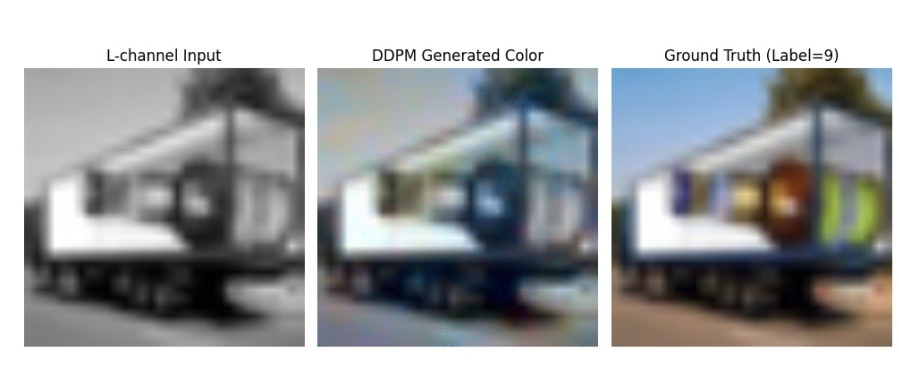
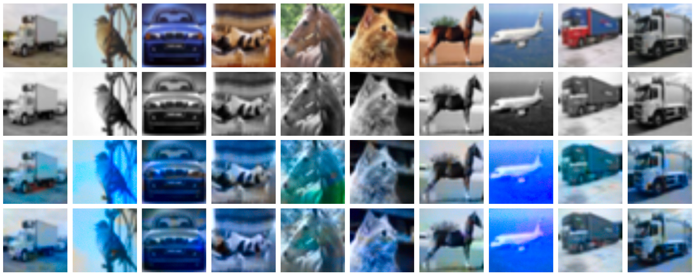

Final Project Results and Graphs
Back to Main Page
Part 1: Time-Conditioned U-Net
Time-Conditioned U-Net Training Losses (5 Epochs)
Time-Conditioned U-Net Results (Original Images, Black and White, 5 Epoch Results, 20 Epoch Results)
Time-Conditioned Horse Results (5 Epochs)

Time-Conditioned Truck Results (5 Epochs)
Part 2: Class-Conditioned U-Net
Class-Conditioned U-Net Training Losses (20 Epochs)

Class-Conditioned U-Net Results, Guidance Scale=5.0 (Original Images, Black and White, 5 Epoch Results, 20 Epoch Results)
Class-Conditioned U-Net Results, Guidance Scale=5.0 (50 Epoch Results)
Class-Conditioned Horse Results, (5 epochs, 5 vs. 10 vs. 15 Guidance Scale)
Class-Conditioned Dog Results (15 vs. 20 epochs, Guidance Scale=15.0)
Class-Conditioned Frog Results (5 vs. 10 vs. 15 vs. 20 epochs, Guidance Scale=15.0)
Part 3: Text-Conditioned U-Net
Text-Conditioned U-Net Training Losses (10 Epochs)
Text-Conditioned U-Net Results